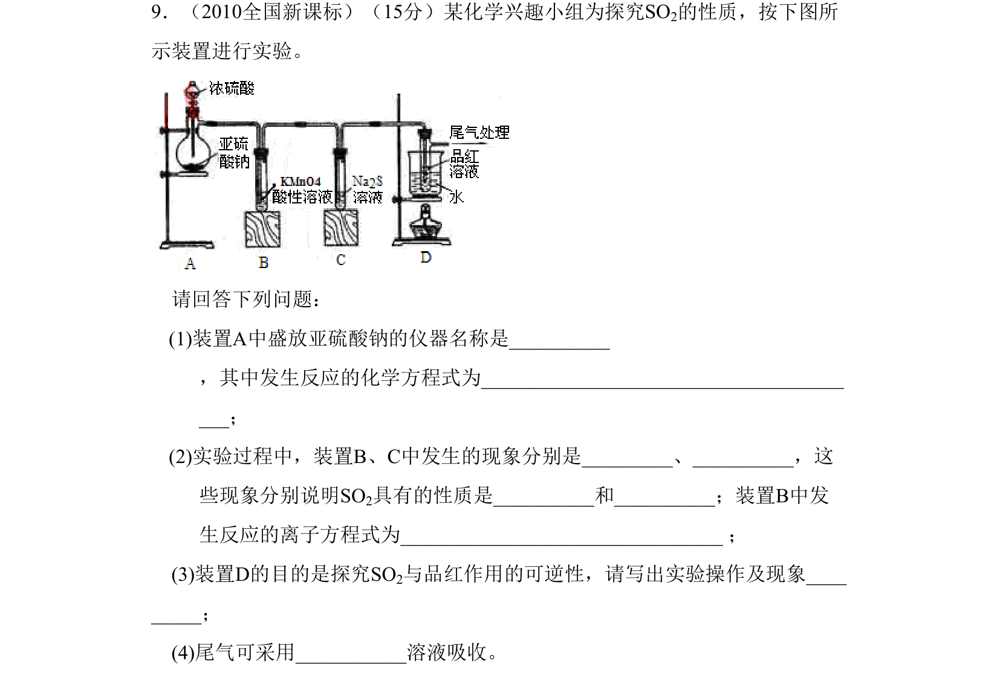
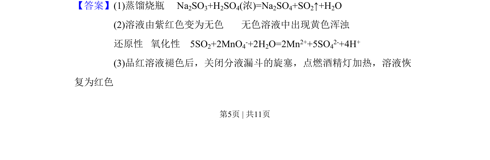
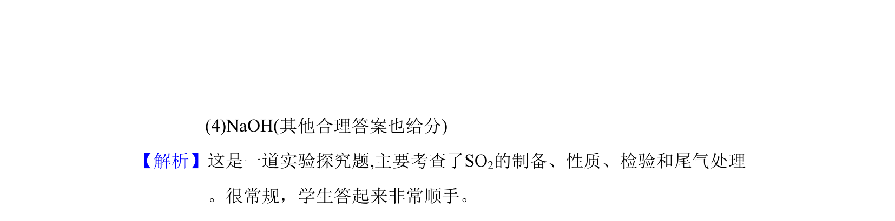

考点：SO2制备 SO2性质 SO2检验 尾气处理

实验探究题考查SO2的制备、性质、检验及尾气处理


📄 原 PDF 第 5 页：
素材/真题/吉林/2008-2024·（吉林）化学高考真题/2010年高考化学试卷（新课标）（解析卷）.pdf
9．（2010全国新课标）（15分）某化学兴趣小组为探究SO2的性质，按下图所 示装置进行实验。 请回答下列问题： (1)装置A中盛放亚硫酸钠的仪器名称是_ ，其中发生反应的化学方程式为_____ ； (2)实验过程中，装置B、C中发生的现象分别是___、_，这 些现象分别说明SO2具有的性质是_和_；装置B中发 生反应的离子方程式为____ ； (3)装置D的目的是探究SO2与品红作用的可逆性，请写出实验操作及现象_ __； (4)尾气可采用_____溶液吸收。
【答案】(1)蒸馏烧瓶 Na2SO3+H2SO4(浓)=Na2SO4+SO2↑+H2O
(2)溶液由紫红色变为无色 无色溶液中出现黄色浑浊
还原性 氧化性 5SO2+2MnO4-+2H2O=2Mn2++5SO42-+4H+
(3)品红溶液褪色后，关闭分液漏斗的旋塞，点燃酒精灯加热，溶液恢
复为红色